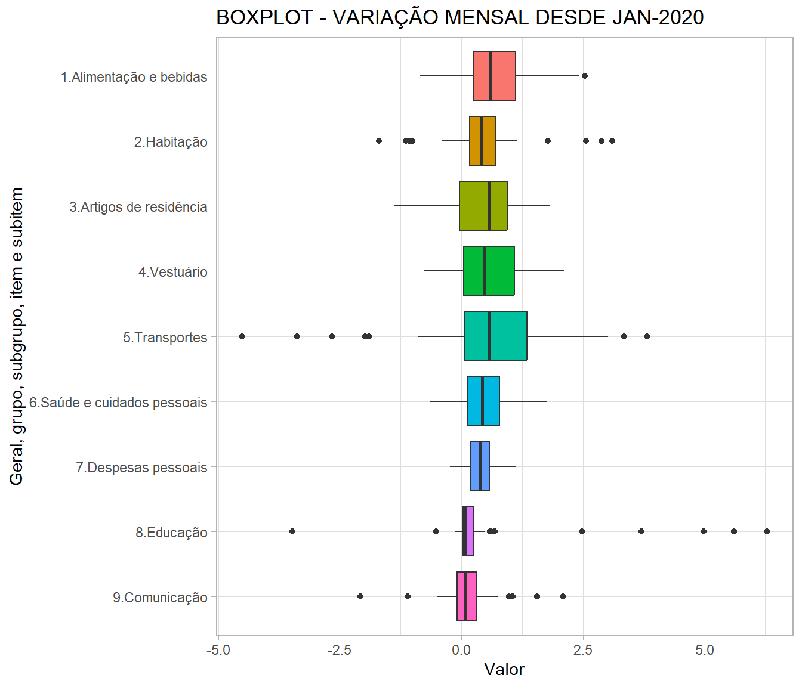
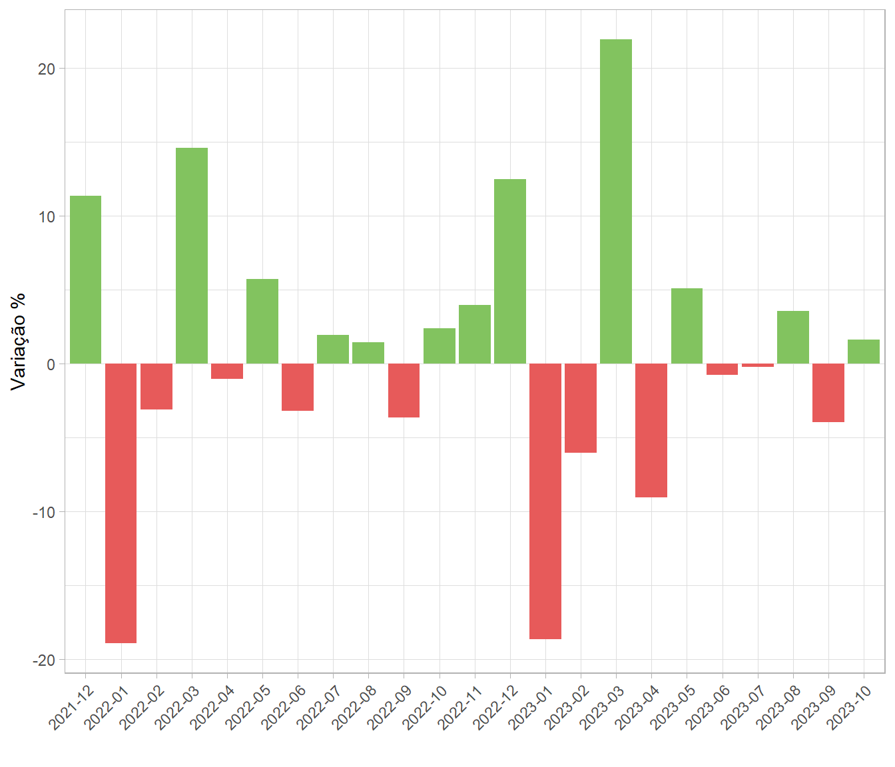

O Produto Interno Bruto (PIB - GDP/Gross Domestic Product) é a soma de todos os bens e serviços finais produzidos por um país, estado ou cidade, geralmente em um ano.
The Organisation for Economic Co-operation and Development (OECD) defines GDP as “an aggregate measure of production equal to the sum of the gross values added of all resident and institutional units engaged in production and services (plus any taxes, and minus any subsidies, on products not included in the value of their outputs)”
An IMF publication states that, “GDP measures the monetary value of final goods and services—that are bought by the final user—produced in a country in a given period (say a quarter or a year).”
Ótica da oferta ou produção
Também conhecida como método do valor adicionado, calcula o montante que cada estágio da produção agrega ao produto. Primeiro estima-se o do valor adicionado bruto fabricado das diversas atividades econômicas.Posteriormente estima-se o valor do consumo intermediário, onde considera os custos dos bens e serviços utilizados para produzir os bens e serviços finais. Ademais, subtrai o valor doméstico bruto do valor intermediário. Por fim, subtrai os valores dos impostos indiretos e soma os valores dos subsídios.Ótica da renda
O método inicia com o somatório dos salários, vencimentos e rendimentos recebidos pelas atividades laborais, juros e receitas advindos de diversos investimentos, aluguéis referentes aos alugueis/arrendamentos de imóveis ou terras, lucros corporativos oriundos dos lucros das empresas e lucros líquidos das transferências dos lucros das empresas para as pessoas. Este somatório resulta no rendimento doméstico líquido dos custos dos fatores. Para chegar ao PIB, deve-se ainda considerar a deprecisação do capital, as taxas de produção e importação e os subsídios estatais.Ótica do consumo
Essa é a metologia mais divulgada onde o PIB é mesurado pela soma do consumo (C), investimento (I), gastos do governo (G) e balança comercial (X-M). Por este método utiliza os preços de aquisição dos bens e serviços finais. Quando não realizada a venda, a contabilidade considera que o produtor comprou de si mesmo.DADOS BACEN SGS
PIB - acumulado dos últimos 12 meses - Em US$ milhões - BCB SGS 4192
Oficialmente o IBGE calcula trimestralmente o PIB , entretanto, devido a utilização deste agregado econômico para formulação de políticas públicas e demais necessidades, o Departamento Econômico do Banco Central estima o PIB por meio da interpolação com dados já divulgados, realizando extrapolação do último valor divulgado do PIB Nominal, sofrendo revisões periódicas.PIB per capita - US$ correntes - 21776
PIB - taxa de variação real no ano - 7326 | 7327 |7328 | 7329
PIB - Preços correntes de 1990 - 1207
Os dados das Contas Nacionais Trimestrais (CNT), a preços constantes de 1990, são apresentados em uma série encadeada de índices de volume. Os dados são compilados pelo método da produção e cobrem toda a economia brasileira. O PIB em preços correntes mede o valor total de bens e serviços para uso final produzidos durante o trimestre antes da dedução do consumo de capital fixo.
É o aumento generalizado e persistente do nível de preços de uma economia.
Causas da inflação
A inflação pode ter várias causas, que podem ser agrupadas em:
Consequências da inflação
A inflação descontrolada gera incertezas importantes na economia, desestimulando o investimento e, assim, prejudicando o crescimento econômico. Os preços relativos ficam distorcidos, gerando várias ineficiências na economia. As pessoas e as firmas perdem noção dos preços relativos e, assim, fica difícil avaliar se algo está barato ou caro. A inflação afeta particularmente as camadas menos favorecidas da população, pois essas têm menos acesso a instrumentos financeiros para se defender da inflação.
Inflação mais alta também aumenta o custo da dívida pública, pois as taxas de juros da dívida pública têm de compensar não só o efeito da inflação mas também têm de incluir um prêmio de risco para compensar as incertezas associadas com a inflação mais alta.Por que a deflação é também indesejável?
O Banco Central trabalha para manter a inflação baixa – não para que os preços declinem. A perspectiva de que os valores cobrados sejam relativamente estáveis ao longo do tempo, com inflação baixa e previsível, é importante para o planejamento de todos. Ao contrário do que possa parecer, preços em queda podem ser prejudiciais para o bom funcionamento da economia. Um comerciante poderá ter prejuízo se ganhar menos amanhã pelo estoque que fez hoje. As famílias e as empresas poderão adiar suas decisões de consumo e investimento se houver a perspectiva de que os preços serão mais baixos amanhã, deprimindo a atividade econômica.Metas para a inflação
Inflação baixa, estável e previsível traz vários benefícios para a sociedade. A economia pode crescer mais, pois a incerteza na economia é menor, as pessoas podem planejar melhor seu futuro e as famílias não têm sua renda real corroída. Para alcançar esse objetivo, o Brasil adota o regime de metas para a inflação, que está em vigor desde 1999.
Esse regime tem sido exitoso no Brasil e no amplo conjunto de países que o adotam. Por esse sistema, os bancos centrais atuam para que a inflação efetiva esteja em linha com uma meta pré-estabelecida. Nesse sistema, a meta para a inflação é anunciada publicamente e funciona como uma âncora para as expectativas dos agentes sobre a inflação futura, permitindo que desvios da inflação em relação à meta sejam corrigidos ao longo do tempo.
No Brasil, a meta para a inflação é definida pelo Conselho Monetário Nacional (CMN) e cabe ao Banco Central (BC) adotar as medidas necessárias para alcançá-la. O índice de preços utilizado é o Índice Nacional de Preços ao Consumidor Amplo (IPCA), calculado pelo Instituto Brasileiro de Geografia e Estatística (IBGE). A meta se refere à inflação acumulada no ano. Por exemplo, a meta para 2023 é de uma inflação de 3,25%.
No desenho atual do sistema, o CMN define em junho a meta para a inflação de três anos-calendário à frente. Por exemplo, em junho de 2018, o CMN definiu a meta para 2021. Esse horizonte mais longo reduz incertezas e melhora a capacidade de planejamento das famílias, empresas e governo.
O sistema prevê ainda um intervalo de tolerância, também definido pelo CMN. Nos últimos anos, o CMN tem definido um intervalo de 1,5 ponto percentual (p.p.) para cima e para baixo. Por exemplo, no caso de 2025, a meta é de 3,00% e o intervalo é de 1,50% a 4,50%. Se a inflação ao final do ano se situar fora do intervalo de tolerância, o presidente do BC tem de divulgar publicamente as razões do descumprimento, por meio de carta aberta ao Ministro da Fazenda, presidente do CMN, contendo descrição detalhada das causas do descumprimento, as providências para assegurar o retorno da inflação aos limites estabelecidos e o prazo no qual se espera que as providências produzam efeito.
Em termos gerais, o regime de metas para a inflação envolve os seguintes elementos:
O IPCA mede a variação de preços de uma cesta de produtos e serviços consumida pela população. O resultado mostra se os preços aumentaram ou diminuíram de um mês para o outro.
A cesta é definida pela Pesquisa de Orçamentos Familiares - POF, do IBGE, que, entre outras questões, verifica o que a população consome e quanto do rendimento familiar é gasto em cada produto: arroz, feijão, passagem de ônibus, material escolar, médico, cinema, entre outros.
O índice, portanto, leva em conta não apenas a variação de preço de cada item, mas também o peso que ele tem no orçamento das famílias.
Atualmente, a população-objetivo do IPCA abrange as famílias com rendimentos de 1 a 40 salários mínimos, qualquer que seja a fonte, residentes nas áreas urbanas das regiões de abrangência do SNIPC, as quais são: regiões metropolitanas de Belém, Fortaleza, Recife, Salvador, Belo Horizonte, Vitória, Rio de Janeiro, São Paulo, Curitiba, Porto Alegre, além do Distrito Federal e dos municípios de Goiânia, Campo Grande, Rio Branco, São Luís e Aracaju.

O INPC verifica a variação do custo de vida médio apenas de famílias com renda mensal de 1 a 5 salários mínimos. Esses grupos são mais sensíveis às variações de preços, pois tendem a gastar todo o seu rendimento em itens básicos, como alimentação, medicamentos, transporte etc
O propósito do INPC e IPCA são o mesmo: medir a variação de preços de uma cesta de produtos e serviços consumida pela população. O resultado mostra se os preços aumentaram ou diminuíram de um mês para o outro.
A cesta de ambos é definida pela Pesquisa de Orçamentos Familiares - POF, do IBGE, que, entre outras questões, verifica o que a população consome e quanto do rendimento familiar é gasto em cada produto: arroz, feijão, passagem de ônibus, material escolar, médico, cinema, entre outros.
Os índices, portanto, levam em conta não apenas a variação de preço de cada item, mas também o peso que ele tem no orçamento das famílias.
O indicador foi concebido no final dos anos de 1940 para ser uma medida abrangente do movimento de preços, que englobasse não apenas diferentes atividades como também etapas distintas do processo produtivo. Dessa forma, o IGP é um indicador mensal do nível de atividade econômica do país, englobando seus principais setores.
O cálculo do indicador, assim como os outros dois indicadores (IGP-10 e IGP-DI), tem em conta a variação de preços de bens e serviços, bem como de matérias-primas utilizadas na produção agrícola, industrial e construção civil. Dessa forma, o resultado do IGP-M é a média aritmética ponderada da inflação ao produtor (IPA), consumidor (IPC) e construção civil (INCC).
Os pesos de cada um dos índices componentes correspondem a parcelas da despesa interna bruta, calculadas com base nas Contas Nacionais – resultando na seguinte distribuição:
O juro nada mais é do que o valor do dinheiro no tempo. Cada país possui diferenças quanto ao tipo de juros, devendo sempre se atentar ao contrato. No caso brasileiro, usamos juros compostos com base de 252 dias úteis. Na maioria dos demais países, usa-se juros simples na base 360.
Os meios de pagamentos amplos são indicadores antecedentes da demanda por moeda, constituindo-se em medida mais fidedigna da liquidez macroeconômica em relação aos agregados monetários restritos, que somente incluem o papel moeda em poder do público e os depósitos à vista. Nesse sentido, os seus componentes podem ser assim definidos:
Deve-se ressaltar que os fundos de investimento considerados no cálculo do M3 não correspondem à população, compreendendo, efetivamente, as modalidades: Cambial; Renda fixa; e Multimercado. Na medida que não são considerados emissores de liquidez, e, portanto, classificados como agentes não depositários, estão excluídos os fundos de ações, fundos de dívida externa e os fundos de investimentos em quotas de fundos de investimentos.
Observe-se que, dentre os títulos federais, somente são considerados os registrados no Sistema Especial de Liquidação e Custódia (Selic). Apesar da alta liquidez dos instrumentos de captação do Tesouro Nacional, entendeu-se que o reconhecimento dessas emissões como quase-moeda nos conceitos de meios de pagamento deve ser o mais restrito possível, dado que aquele Órgão não integra o Sistema Financeiro Nacional (SFN).
(1) São consideradas instituições depositárias aquelas cujos instrumentos de captação integram os meios de pagamento ampliados.
O balanço de pagamentos é o registro estatístico de todas as transações – fluxo de bens e direitos de valor econômico – entre os residentes de uma economia e o restante do mundo, ocorridos em determinado período de tempo.
| Balanço de Pagamentos | ||||||
| Fonte: BCB - DSTAT | ||||||
| Rubricas | dez-2023 | nov-2023 | out-2023 | set-2023 | ago-2023 | jul-2023 |
|---|---|---|---|---|---|---|
| 1. Transações Correntes | -5833.8 | -1863.4 | -846.3 | -180.1 | -1999.7 | -5217.1 |
| 1.1 Balança comercial de bens | 7279.2 | 6663.5 | 7577.9 | 7485.0 | 7698.0 | 6527.5 |
| 1.1.1 Exportações | 29068.0 | 28162.5 | 29851.7 | 28950.8 | 31533.4 | 28566.9 |
| 1.1.2 Importações | 21788.7 | 21499.1 | 22273.8 | 21465.8 | 23835.4 | 22039.4 |
| 1.2 Balança comercial de serviços | -3752.8 | -3551.8 | -3545.2 | -3298.2 | -2878.2 | -2987.5 |
| 1.3 Renda Primária | -9300.6 | -4940.3 | -5049.0 | -4527.4 | -6943.7 | -8825.4 |
| 1.4 Renda Secundária | -59.7 | -34.8 | 170.1 | 160.5 | 124.2 | 68.3 |
| 2. Conta Capital | 1.3 | 13.6 | 23.0 | 55.2 | 54.2 | 21.7 |
| 3. Conta Financeira | -6154.7 | -1942.9 | -1775.8 | -2190.4 | -3224.4 | -6553.6 |
| 3.1 Investimento Direto | 1895.8 | -2663.8 | -699.0 | -2304.9 | -5632.7 | -5485.9 |
| 3.2 Investimento em Carteira | 3045.6 | -4397.8 | -3946.3 | -297.9 | 1139.6 | -1945.4 |
| 3.3 Derivativos | -2227.6 | -1826.1 | -1047.3 | -248.0 | 528.2 | -1633.6 |
| 3.4 Outros Investimentos | -9928.2 | 5810.2 | 3177.4 | 597.8 | 321.1 | 2108.5 |
| 3.5 Ativos de Reserva | 1059.7 | 1134.5 | 739.4 | 62.6 | 419.3 | 402.9 |
| 4. Erros e Omissões | -322.1 | -93.2 | -952.6 | -2065.5 | -1279.0 | -1358.1 |
| Unidade: US$ (milhões) | ||||||
Dados referentes as receitas e dispêndios do governo.
| Variação mensal do Novo Caged | |||
| Fonte: Min. Economia - SEPRT | |||
| date | saldo | demissões | admissões |
|---|---|---|---|
| 2023-12-01 | −430.159 | 1.932.722 | 1.502.563 |
| 2023-11-01 | 130.097 | 1.736.655 | 1.866.752 |
| 2023-10-01 | 190.366 | 1.750.915 | 1.941.281 |
| 2023-09-01 | 211.764 | 1.705.293 | 1.917.057 |
| 2023-08-01 | 220.844 | 1.878.367 | 2.099.211 |
| 2023-07-01 | 142.702 | 1.740.496 | 1.883.198 |
| 2023-06-01 | 157.198 | 1.756.932 | 1.914.130 |
| 2023-05-01 | 155.270 | 1.844.932 | 2.000.202 |
| 2023-04-01 | 180.005 | 1.685.274 | 1.865.279 |
| 2023-03-01 | 195.171 | 1.973.247 | 2.168.418 |
| 2023-02-01 | 241.785 | 1.708.059 | 1.949.844 |
| 2023-01-01 | 83.297 | 1.790.929 | 1.874.226 |
| Secretaria Especial de Previdência e Trabalho, Cadastro Geral de Empregados e Desempregados (Min. Economia/SEPRT/Novo Caged) | |||
| CAGED12_SALDON12 | CAGED12_DESLIGN12 | CAGED12_ADMISN12 | |||
A Pesquisa Mensal do Comércio - PMC é uma pesquisa por amostragem probabilística, realizada em todas as Unidades da Federação.
O objetivo contemplado no desenho da amostra é a obtenção de estimativas dos totais populacionais referentes à variável receita bruta de revenda, por Unidade da Federação e por atividade PMC, utilizadas para construir os indicadores da pesquisa que são divulgados mensalmente. A unidade de investigação da PMC é a empresa, sendo também a unidade amostral, ou seja, a unidade utilizada para a seleção e expansão da amostra.
As séries da PMC ajustadas sazonalmente consideram como fatores sazonais, o efeito calendário, os feriados de Carnaval, Páscoa e Corpus Christi além da identificação de outliers. Os cálculos são feitos utilizando-se o software X12 ARIMA, do U.S. Census Bureau.
A Pesquisa Mensal de Serviços - PMS tem como objetivo produzir indicadores que permitam acompanhar o comportamento conjuntural dos principais segmentos empresariais não-financeiros do setor de serviços, excluindo-se os da saúde e da educação, complementando, através da análise de curto prazo, o mapeamento da estrutura das atividades de serviços no País, efetuado pela Pesquisa Anual de Serviços - PAS.
{kind=link}